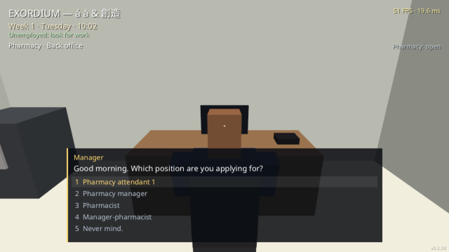
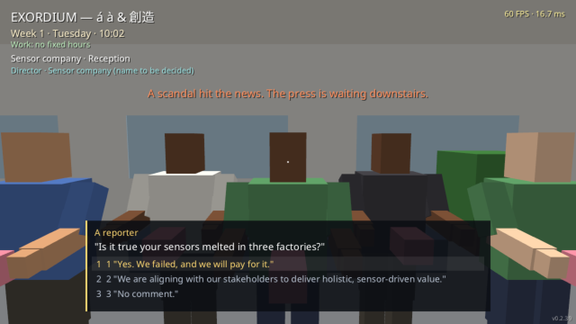

A Árvore Canônica de Profissões
Trabalhar não é uma pausa entre missões: o trabalho É o jogo. Estruturada por ramos profissionais autônomos: explore os 10 cargos da Lunar Sensores Industriais, os 7 postos da Rede de Drogarias, os 7 degraus gastronômicos dos Restaurantes, os Bicos Autônomos e o Varejo de Supermercados. Cada ramo conta com sequências visuais claras, escolhas de promoção, exigência de diplomas e modificadores salariais vitalícios.
Performance Invisível
Não existe barra na tela na versão final. Você sente seu rendimento pelo comportamento das pessoas: colegas invejosos te chamam de "puxa-saco" se produzir demais, e o chefe desconfia de início ("cavalo paraguaio"). A reputação precede o trabalhador sênior.
Penalidade em Dobro
Nos modos Hard e Inferno, um erro não cancela o ganho do dia. No Modo Brasil, um erro desconta o dobro do que a tarefa renderia! Se esquecer de repor guardanapos na mesa, perde 4 pontos.
Bônus Permanentes
Passar por Vendas Externas garante +20% de salário perpétuo (Bônus de Experiência Comercial). Formar-se e acumular Farmacêutico e Gerente confere +50% de salário base vitalício!
"Atenção ao esquema de 'Caixa 2' como Gerente de Vendas: se extorquir vendedores corruptos por 50% dos desvios, você corre 4% de chance do vendedor ser um agente infiltrado do Diretor Geral. No meio do aperto de mãos, ele diz: 'Esqueci de dizer algo...', o Diretor entra e quatro policiais dão voz de prisão imediata!"


"Ao mudar de empresa na cidade, seu histórico de rendimento determina sua contratação. No início chamam de 'carta de recomendação do chefe anterior'. Mas a partir do Nível 5, o jogo avisa: 'Sua reputação o precede'. Gerentes, chefs e farmacêuticos podem ser contratados diretamente sem precisar subir os degraus de novo!"